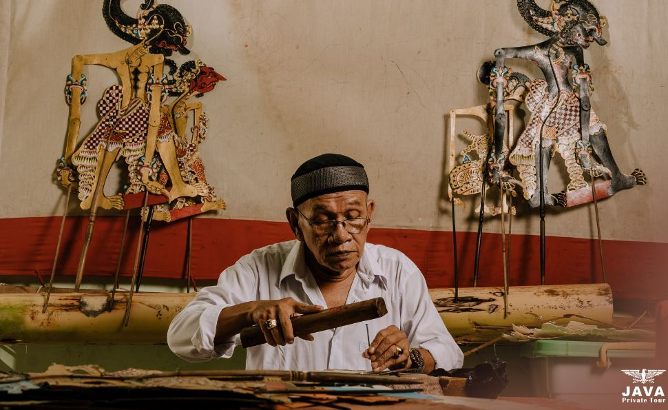
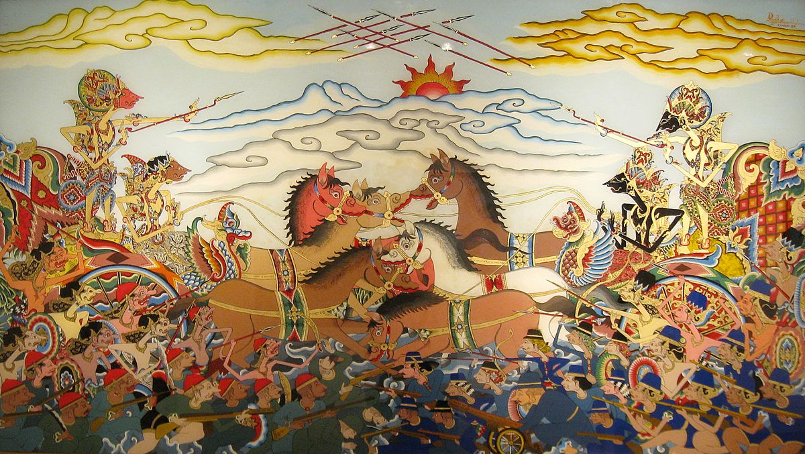
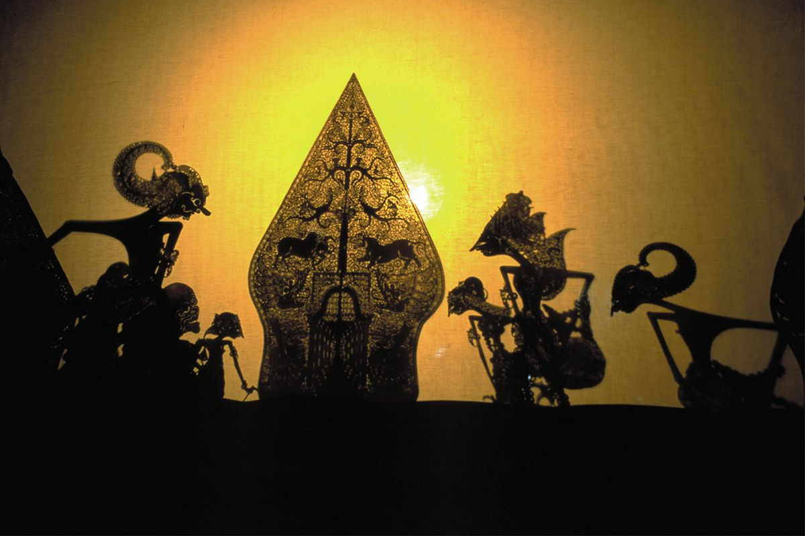
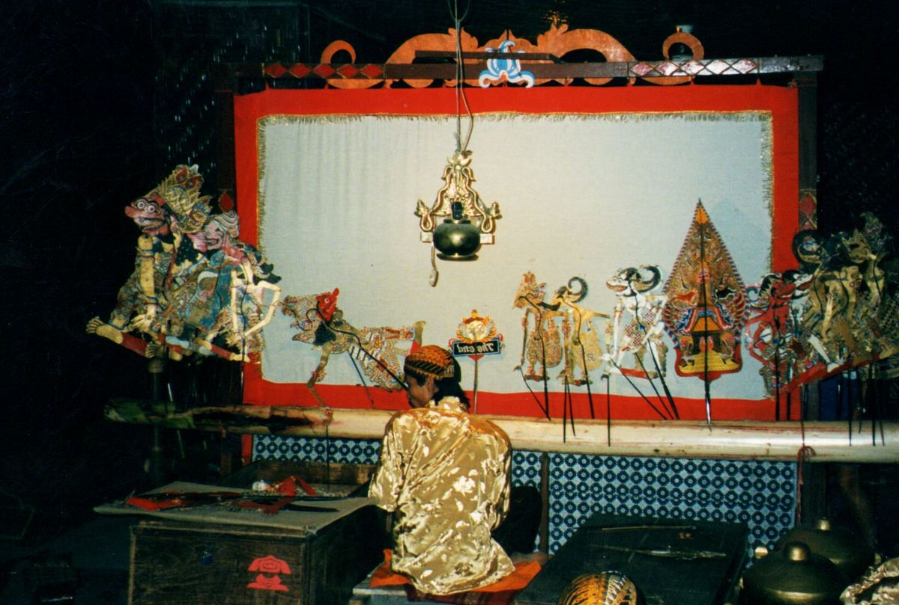

Kisah Dalam Bayangan
Indonesia merupakan negara kepulauan terbesar di dunia yang menyimpan kekayaan seni dan budaya yang sangat luar biasa. Terbentang dari Sabang sampai Merauke, bangsa ini dihuni oleh ratusan suku bangsa yang masing-masing memiliki tradisi, bahasa, tarian, dan adat istiadat tersendiri. Kebudayaan Indonesia lahir dari sejarah panjang interaksi antar suku lokal serta pengaruh peradaban dunia, sehingga menghasilkan identitas nasional yang sangat beragam namun tetap satu. Keanekaragaman ini bukan hanya sekadar warisan dari nenek moyang, melainkan jiwa dan karakter utama bangsa Indonesia. Salah satu bentuk kekayaan budaya yang paling terkemuka dan diakui secara internasional adalah seni pertunjukan tradisional.




Di antara berbagai kesenian tradisional Nusantara yang tersebar di seluruh pelosok negeri, wayang berdiri sebagai salah satu seni pertunjukan paling tua, paling rumit, dan paling dihormati, khususnya di wilayah Jawa dan Bali. Secara etimologi, kata "wayang" berakar dari kata "bayang" atau "bayangan", yang mengacu pada teknik pertunjukan visual di mana bayangan dari boneka kayu atau kulit dipantulkan ke layar kain putih yang disebut kelir dengan bantuan sorotan lampu minyak tradisional (blencong). Seni pertunjukan ini bukan sekadar hiburan visual semata, melainkan sebuah bentuk karya seni holistik yang memadukan berbagai unsur artistik secara harmonis—mulai dari seni ukir tatah sungging pada bahan kulit kerbau, seni musik vokal dan instrumental melalui alunan gamelan serta nyanyian para pesinden, hingga seni sastra tutur dan seni peran yang dibawakan oleh seorang Dalang. Sebagai tokoh sentral dalam pertunjukan, sang Dalang memiliki peran yang sangat krusial; ia tidak hanya mengendalikan pergerakan puluhan karakter wayang di atas panggung, tetapi juga menirukan berbagai jenis suara, mengatur tempo musik, serta menyampaikan narasi cerita secara spontan selama berjam-jam, sering kali berlangsung semalam suntuk. Cerita-cerita yang dipentaskan dalam wayang umumnya bersumber dari epik besar India, yaitu Ramayana dan Mahabharata. Namun, cerita-cerita klasik tersebut telah mengalami proses akulturasi dan penyesuaian yang sangat mendalam dengan kearifan lokal, norma sosial, serta pandangan hidup masyarakat Indonesia selama berabad-abad, sehingga melahirkan kisah-kisah khas Nusantara yang sarat akan makna kehidupan.
Daya tarik utama dan nilai tertinggi dari seni pertunjukan wayang tidak hanya terletak pada estetika visual atau kerumitan teknik pertunjukannya, melainkan pada kedalaman filosofi hidup serta nilai-nilai moral yang disampaikannya kepada para penonton. Setiap karakter dan jalan cerita dalam dunia pewayangan dirancang sebagai cerminan kompleksitas sifat manusia serta dinamika kehidupan bermasyarakat. Melalui perseteruan abadi antara kelompok Pandawa yang melambangkan kebaikan, keadilan, dan kebijaksanaan melawan kelompok Kurawa yang merepresentasikan keserakahan, iri hati, dan kejahatan, pertunjukan wayang menjadi media edukasi moral yang sangat efektif. Selain karakter utama para ksatria dan raja, hadir pula figur unik seperti Punokawan (Semar, Gareng, Petruk, dan Bagong) yang berperan sebagai abdi sekaligus penasihat para ksatria. Kelompok Punokawan ini menjadi sarana menyampaikan humor, kritik sosial yang tajam, serta nasihat-nasihat praktis mengenai etika kepemimpinan dan keseimbangan hidup dengan cara yang merakyat dan mudah dicerna. Melalui kombinasi antara keindahan spiritual, sejarah panjang yang mengakar kuat, serta pengaruhnya yang masif terhadap pembentukan karakter budaya bangsa, UNESCO secara resmi mengukuhkan wayang sebagai Masterpiece of the Oral and Intangible Heritage of Humanity (Mahakarya Warisan Budaya Lisan dan Non-Benda Manusia) pada tanggal 7 November 2003. Pengakuan internasional ini membuktikan bahwa wayang bukan lagi sekadar tradisi lokal milik masyarakat Indonesia, melainkan warisan peradaban dunia yang bernilai tinggi. Hingga hari ini, di tengah gempuran modernisasi dan teknologi digital, seni wayang tetap bertahan dan terus beradaptasi sebagai simbol keagungan tradisi Nusantara yang tidak pernah kehilangan relevansinya dari generasi ke generasi.